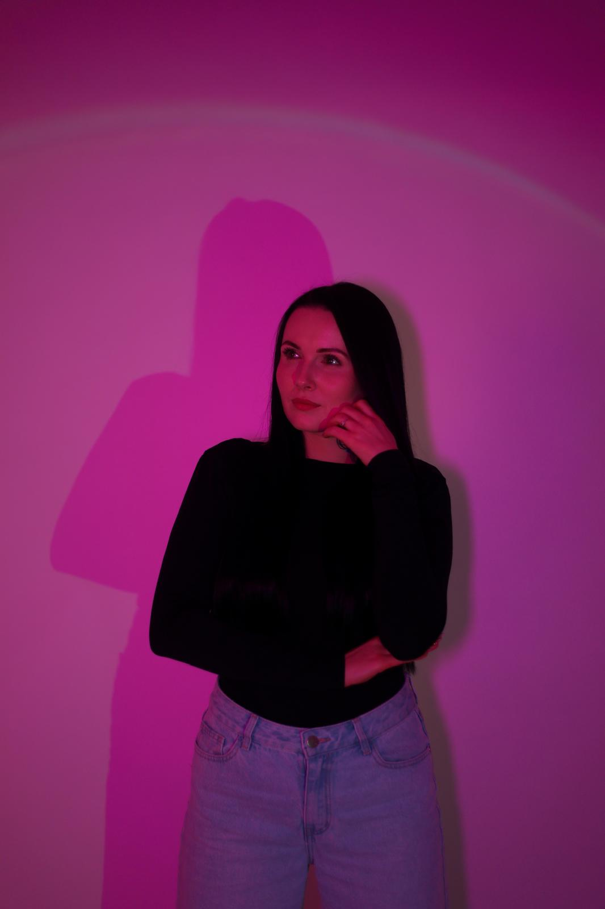

Jmenuju se Míša a focení je pro mě víc než jen mačkání spouště. Začalo to úplně jednoduše — focením na iPhone. Postupně jsem ale zjistila, že mě fotografie opravdu baví a chci se v ní posouvat dál. Nakonec jsem doma přesvědčila manžela, že „nutně potřebuju foťák“, a tak přišel můj první Nikon D3500. Jenže u jednoho foťáku to samozřejmě neskončilo. Po pár měsících přišel lepší foťák, další objektiv… a pak zase další.
Focení mě naplňuje hlavně tím, že každý člověk, auto, motorka nebo zvíře má svůj vlastní příběh. Nejradši fotím přirozené momenty, emoce a energii. Miluju focení pejsků, aut, motorek, portrétů, rodinných momentů i sportu.
Jsem přátelská, energická a na focení si zakládám hlavně na pohodové atmosféře. Chci, aby se lidé před objektivem cítili dobře a přirozeně. A i když po focení často řeknu, že „z toho dnes asi nic nebude“, většinou mě za chvíli najdete u počítače, jak nadšeně třídím a upravuju fotky. Fotografie pro mě není povinnost. Je to něco, co mě opravdu baví.